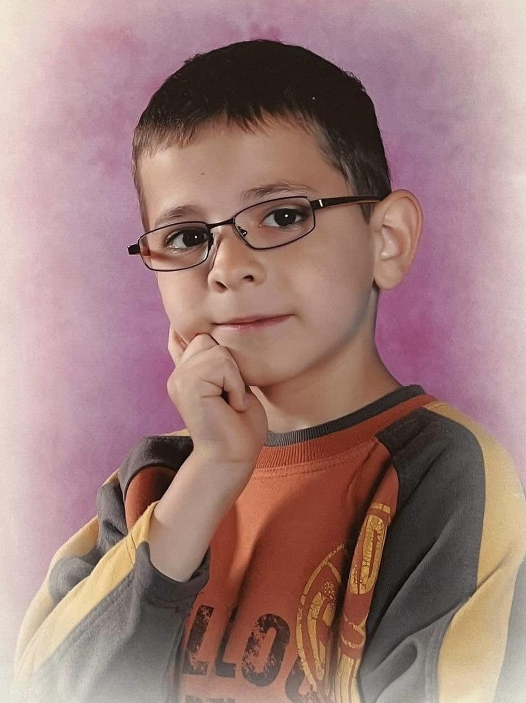

Background
I'm 21 years old, pursuing a bachelor's in Applied Data Science & Artificial Intelligence at Breda University of Applied Sciences in the Netherlands. Current GPA: 3.98 / 4.0.
I have a deep passion for solving complex data challenges with machine learning and AI — analyzing patterns, building predictive models, and uncovering insights that drive real decisions.
Programming excites me because it provides clarity and logic, where every challenge has a solution. Seeing my efforts translate into real results is incredibly rewarding. I believe AI is shaping the future, and I’m eager to contribute to solving emerging challenges in this dynamic field.
Beyond academics, I value a well-balanced lifestyle. Playing football, going for a run, or going to the gym keep me active and sharp, both mentally and physically.
"I am persistent and strongly believe that hard work and dedication make anything possible."


My Story
I was born and raised in Hungary, spending my early years in a small village where I attended elementary school. Later, I pursued my high school education at Varga Katalin High School in Szolnok, specializing in IT and Mathematics. It was during this time that I was introduced to programming, robotics, and linear algebra.
In 2023, I moved to the Netherlands to pursue my studies at Breda University of Applied Sciences. This was a significant step in my personal and professional growth, and living abroad has enriched my experiences, both academically and socially.
Outside of tech I'm a football enthusiast (the pro career didn't pan out, but the passion remains). I love travelling, exploring new cultures and cuisines, and I have a deep interest in architecture and tourism.
"I am excited about the future and look forward to the adventures that lie ahead."
Education
Academic Background
BSc Applied Data Science & Artificial Intelligence
Breda University of Applied Sciences (BUas) · Breda, Netherlands
High School Diploma — Information Technology & Applied Mathematics
Varga Katalin High School · Szolnok, Hungary
Technical Skills
- Programming LanguagesPython · HTML · CSS · SQL
- ML / DLScikit-learn · TensorFlow · Keras · PyTorch · Transformers · Neural Networks
- Computer VisionOpenCV · U-Net · SAM2 · YOLO · RF-DETR
- MLOps & CloudDocker · GitHub Actions · MLFlow · Azure · Bitbucket · Google Cloud
- Data & VizualizationPandas · NumPy · Matplotlib · Seaborn · Plotly · Power BI
- OtherReinforcement Learning · NLP · Agile Project Management · Statistical Analysis · A/B Testing
Languages
- English — Fluent
- Hungarian — Native
- German — Beginner
- Dutch — Beginner